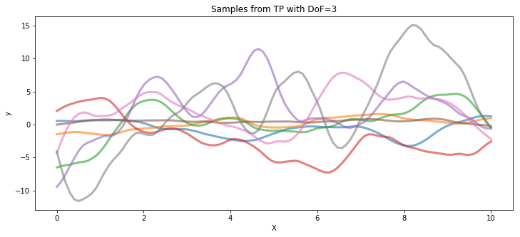
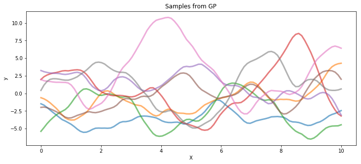
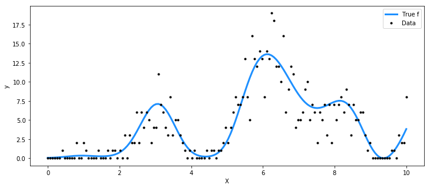
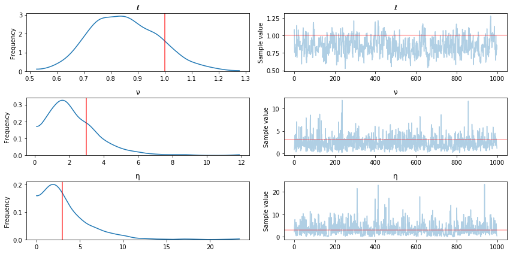
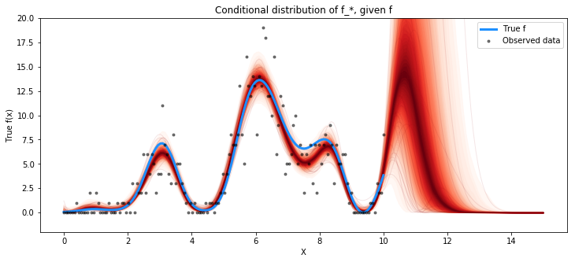

Student-t Process¶
PyMC3 also includes T-process priors. They are a generalization of a
Gaussian process prior to the multivariate Student’s T distribution. The
usage is identical to that of gp.Latent, except they require a
degrees of freedom parameter when they are specified in the model. For
more information, see chapter 9 of
Rasmussen+Williams, and Shah
et al..
Note that T processes aren’t additive in the same way as GPs, so
addition of TP objects are not supported.
Samples from a TP prior¶
The following code draws samples from a T process prior with 3 degrees of freedom and a Gaussian process, both with the same covariance matrix.
In [1]:
import pymc3 as pm
import theano.tensor as tt
import numpy as np
import matplotlib.pyplot as plt
%matplotlib inline
In [2]:
# set the seed
np.random.seed(1)
n = 100 # The number of data points
X = np.linspace(0, 10, n)[:, None] # The inputs to the GP, they must be arranged as a column vector
# Define the true covariance function and its parameters
ℓ_true = 1.0
η_true = 3.0
cov_func = η_true**2 * pm.gp.cov.Matern52(1, ℓ_true)
# A mean function that is zero everywhere
mean_func = pm.gp.mean.Zero()
# The latent function values are one sample from a multivariate normal
# Note that we have to call `eval()` because PyMC3 built on top of Theano
tp_samples = pm.MvStudentT.dist(mu=mean_func(X).eval(), cov=cov_func(X).eval(), nu=3).random(size=8)
## Plot samples from TP prior
fig = plt.figure(figsize=(12,5)); ax = fig.gca()
ax.plot(X.flatten(), tp_samples.T, lw=3, alpha=0.6);
ax.set_xlabel("X"); ax.set_ylabel("y"); ax.set_title("Samples from TP with DoF=3");
gp_samples = pm.MvNormal.dist(mu=mean_func(X).eval(), cov=cov_func(X).eval()).random(size=8)
fig = plt.figure(figsize=(12,5)); ax = fig.gca()
ax.plot(X.flatten(), gp_samples.T, lw=3, alpha=0.6);
ax.set_xlabel("X"); ax.set_ylabel("y"); ax.set_title("Samples from GP");


Poisson data generated by a T process¶
For the Poisson rate, we take the square of the function represented by the T process prior.
In [11]:
np.random.seed(7)
n = 150 # The number of data points
X = np.linspace(0, 10, n)[:, None] # The inputs to the GP, they must be arranged as a column vector
# Define the true covariance function and its parameters
ℓ_true = 1.0
η_true = 3.0
cov_func = η_true**2 * pm.gp.cov.ExpQuad(1, ℓ_true)
# A mean function that is zero everywhere
mean_func = pm.gp.mean.Zero()
# The latent function values are one sample from a multivariate normal
# Note that we have to call `eval()` because PyMC3 built on top of Theano
f_true = pm.MvStudentT.dist(mu=mean_func(X).eval(), cov=cov_func(X).eval(), nu=3).random(size=1)
y = np.random.poisson(f_true**2)
fig = plt.figure(figsize=(12,5)); ax = fig.gca()
ax.plot(X, f_true**2, "dodgerblue", lw=3, label="True f");
ax.plot(X, y, 'ok', ms=3, label="Data");
ax.set_xlabel("X"); ax.set_ylabel("y"); plt.legend();

In [12]:
with pm.Model() as model:
ℓ = pm.Gamma("ℓ", alpha=2, beta=2)
η = pm.HalfCauchy("η", beta=3)
cov = η**2 * pm.gp.cov.ExpQuad(1, ℓ)
# informative prior on degrees of freedom < 5
ν = pm.Gamma("ν", alpha=2, beta=1)
tp = pm.gp.TP(cov_func=cov, nu=ν)
f = tp.prior("f", X=X)
# adding a small constant seems to help with numerical stability here
y_ = pm.Poisson("y", mu=tt.square(f) + 1e-6, observed=y)
tr = pm.sample(1000)
Auto-assigning NUTS sampler...
Initializing NUTS using advi+adapt_diag...
Average Loss = 1,379.5: 6%|▌ | 11278/200000 [01:05<15:56, 197.36it/s]
Convergence archived at 11300
Interrupted at 11,300 [5%]: Average Loss = 2,068
100%|██████████| 1500/1500 [31:34<00:00, 1.46s/it]/home/bill/pymc3/pymc3/step_methods/hmc/nuts.py:467: UserWarning: Chain 0 contains 11 diverging samples after tuning. If increasing `target_accept` does not help try to reparameterize.
% (self._chain_id, n_diverging))
In [13]:
pm.traceplot(tr, varnames=["ℓ", "ν", "η"], lines={"ℓ": ℓ_true, "η": η_true, "ν": 3});

In [14]:
n_new = 200
X_new = np.linspace(0, 15, n_new)[:,None]
# add the GP conditional to the model, given the new X values
with model:
f_pred = tp.conditional("f_pred", X_new)
# Sample from the GP conditional distribution
with model:
pred_samples = pm.sample_ppc(tr, vars=[f_pred], samples=1000)
100%|██████████| 1000/1000 [01:44<00:00, 7.08it/s]
In [18]:
fig = plt.figure(figsize=(12,5)); ax = fig.gca()
from pymc3.gp.util import plot_gp_dist
plot_gp_dist(ax, np.square(pred_samples["f_pred"]), X_new);
plt.plot(X, np.square(f_true), "dodgerblue", lw=3, label="True f");
plt.plot(X, y, 'ok', ms=3, alpha=0.5, label="Observed data");
plt.xlabel("X"); plt.ylabel("True f(x)"); plt.ylim([-2, 20])
plt.title("Conditional distribution of f_*, given f"); plt.legend();
